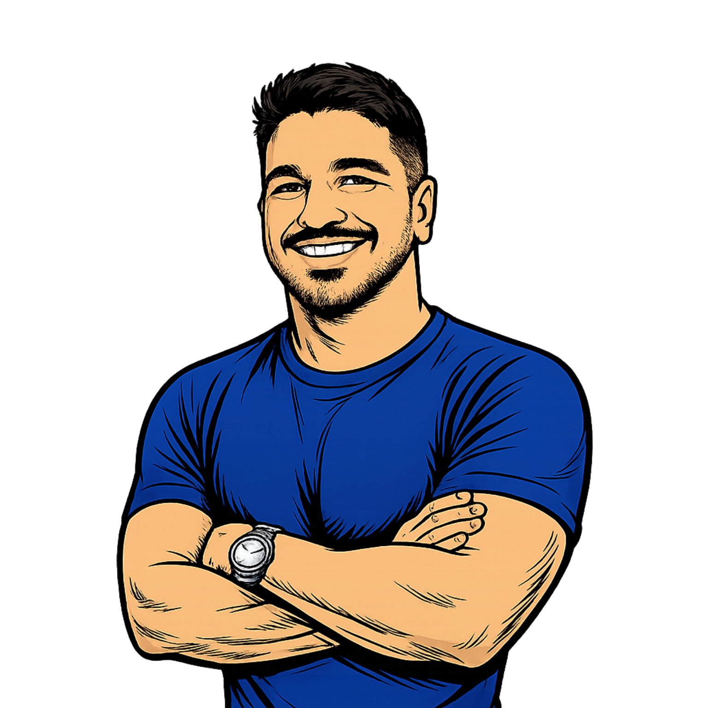

Especialista atuando com Microsoft Azure, Windows Server, Linux, Docker, Kubernetes, Terraform, Automação, Virtualização e práticas DevOps.
Thiago Kusal
Especialista em Infraestrutura, Cloud e Automação. Transformando ambientes Microsoft em plataformas modernas e ajudando na formação da próxima geração de profissionais através do RookieOps.
Explorar o RookieOpsSobre Mim
"Mais do que manter a infraestrutura rodando, meu foco é garantir que o negócio nunca pare."
Atuo unindo o mundo da Infraestrutura, Identidade (IAM) e Automação. Minha missão é tornar o ambiente seguro e previsível, substituindo tarefas manuais repetitivas por automações. Com experiência em ambientes híbridos, Microsoft Entra ID e Microsoft 365, busco sempre a agilidade da automação sem perder a robustez da infraestrutura clássica.
Certificações Ativas
Tecnologias e Ferramentas
Últimas do RookieOps
Confira meus artigos mais recentes sobre Cloud, DevOps e Infraestrutura.
Carregando postagens...